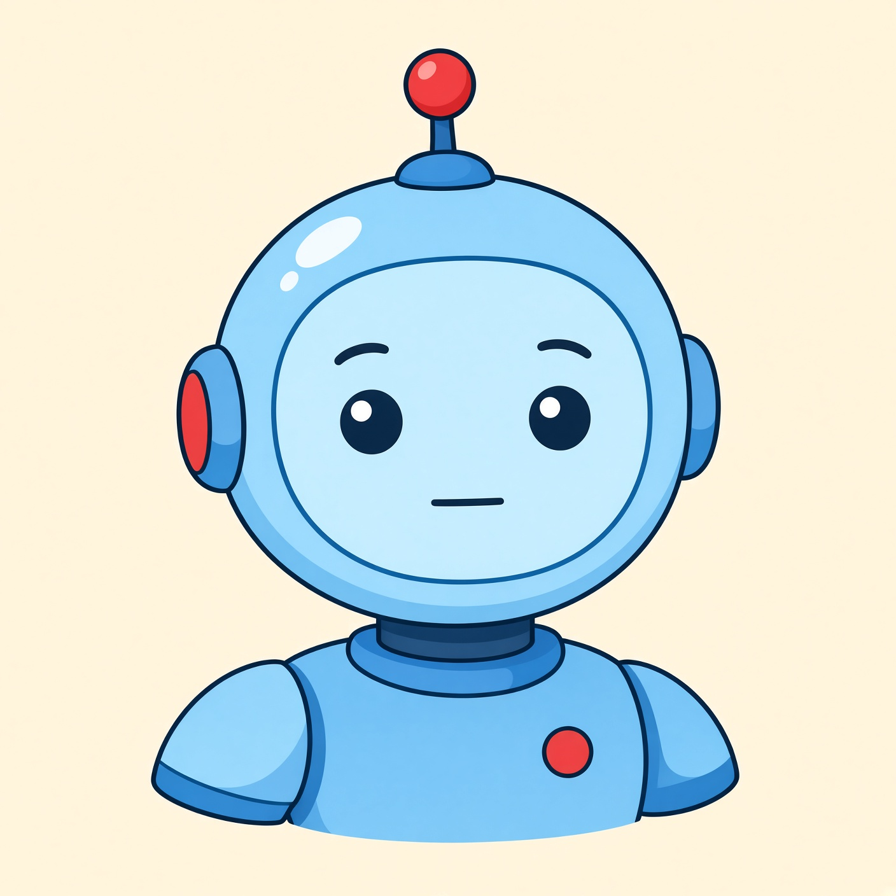

Bạn đang vui thật khi chơi. Robot chỉ có mặt được vẽ sẵn — cảm xúc nhân tạo do con người lập trình.
Bấm lệnh. Mặt robot đổi theo lệnh của em.

Robot đang chờ lệnh. Chưa có ai bảo nó vui hay buồn, nên mặt giữ nguyên. Cảm xúc này không tự nảy ra trong đầu robot.
Em học được gì? Cảm xúc của bạn đến từ việc bạn đang vui. Robot chỉ đổi mặt theo nút bấm / chương trình đã viết sẵn.